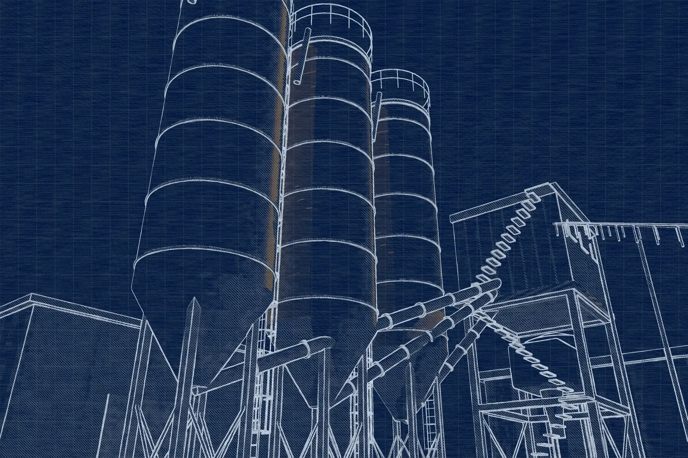
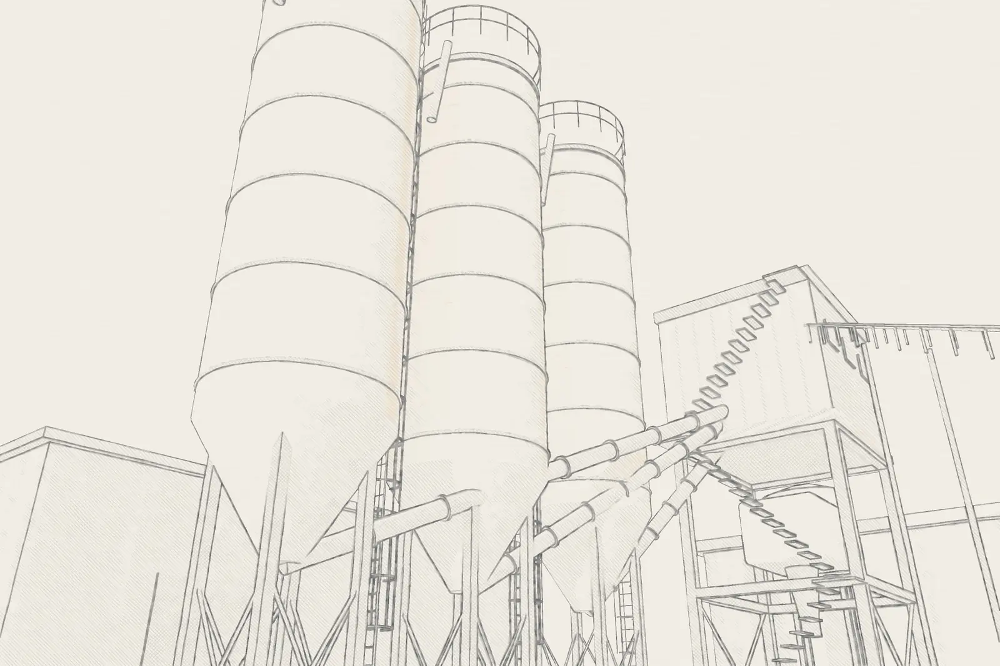
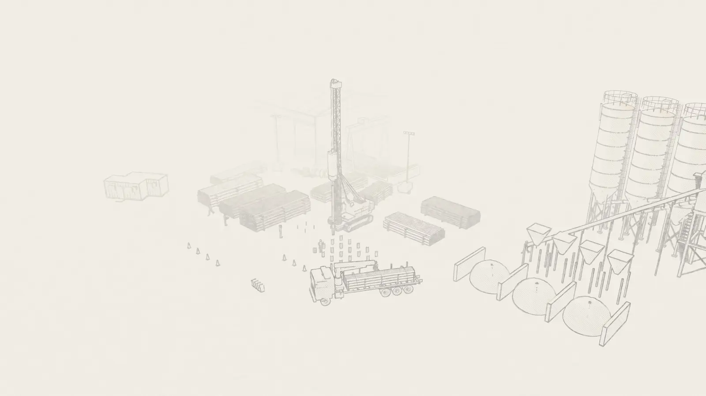

Precisão digital na dosagem
Sistemas 100% automatizados e balanças de alta precisão, calibradas conforme a NBR 7212. A dosagem eletrônica reproduz o traço com fidelidade absoluta.

Central de concreto
Engenharia de precisão em nossa central automatizada, projetada para operar sob regimes de alta exigência.
Mais que uma unidade de mistura
A Central de Concreto da IPR é responsável por converter insumos selecionados em um material de performance superior.
Nossa usina é a garantia do cumprimento integral dos requisitos normativos e das especificações de projeto, assegurando a confiabilidade estrutural de cada estaca produzida.

Fluxo de produção
Cada etapa é instrumentada e registrada, eliminando as variáveis e imprecisões do carregamento manual.
Cimento em silos e agregados com granulometria controlada.
Pesagem gravimétrica em balanças calibradas — o traço de laboratório reproduzido em cada ciclo.
Misturadores industriais distribuem cimento, agregados e aditivos de forma uniforme.
Cada metro cúbico é registrado, da origem dos insumos ao elemento estrutural.
Diferenciais técnicos e operacionais
Sistemas 100% automatizados e balanças de alta precisão, calibradas conforme a NBR 7212. A dosagem eletrônica reproduz o traço com fidelidade absoluta.
Massa com consistência controlada e excelente trabalhabilidade, evitando segregações e garantindo a integridade durante o adensamento.
Controle exato da relação água/cimento, fator determinante para a durabilidade e para a resistência à compressão projetada, com margens de segurança consistentes.
Monitoramento completo da carga — desde a origem dos insumos até a aplicação final no elemento estrutural.

O diferencial da sua obra
Ao centralizar a produção, a IPR mitiga riscos operacionais externos e garante que o concreto aplicado possua características físicas e químicas superiores às misturas de canteiro convencionais.
Resultado: fundações com maior vida útil e resistência a agentes agressivos.
Orçamento técnico
Fale com nossos especialistas e solicite um orçamento técnico para o seu projeto. Envie a sondagem SPT e as cargas de projeto para agilizar a análise.